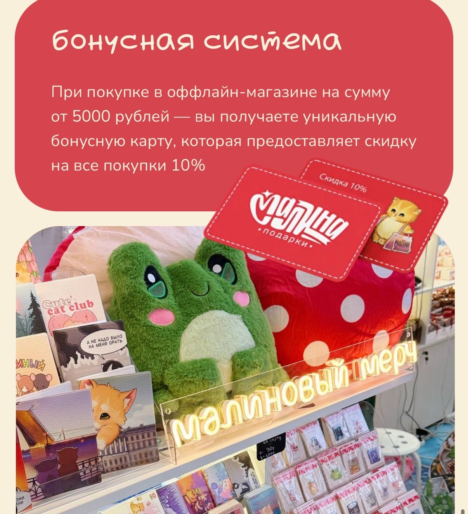
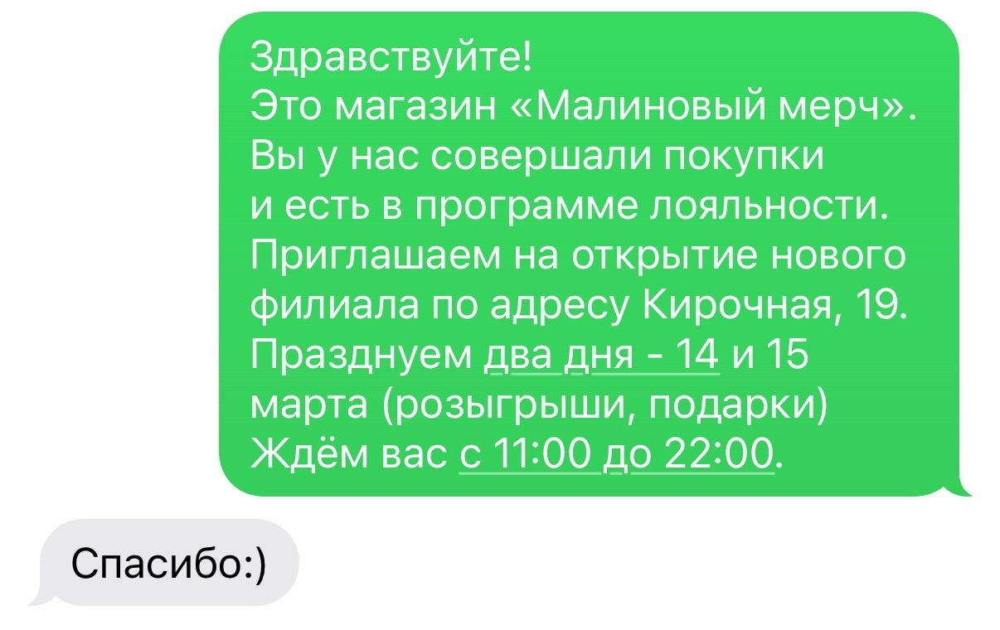

Поддерживать повторную коммуникацию с клиентами и стимулировать возвращение в магазины.
Работала с 1С:CRM: клиентские рассылки, приглашения на мероприятия, коммуникация с клиентской базой.
Участвовала в развитии программы лояльности: карта постоянного клиента со скидкой 10% при покупке от 5 000 ₽.

